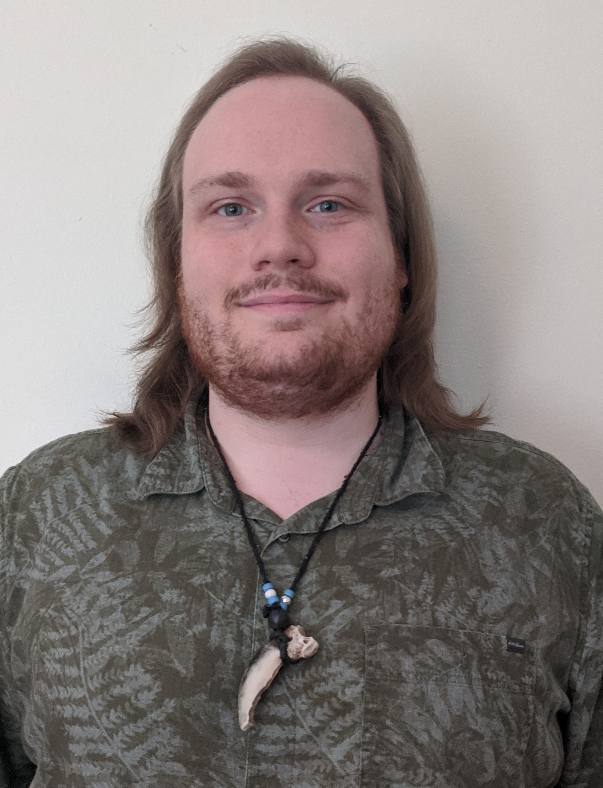

About Me
I'm a former session musician turned programmer. Born in Toronto, I have always had a passion for music. I took up programming as a hobby during the Covid-19 pandemic and swiftly found web development to be the perfect union of art and code. My creative passion fuels me to treat every line of code as a passion project.